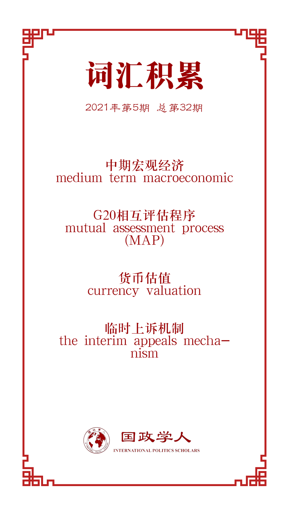

收录于合集 #中美关系 13个

作品简介
【作者】 Gregory T. Chin（PhD）是加拿大约克大学政治经济学副教授。研究重点是中国的国际金融和货币事务、亚洲区域合作、金砖国家和全球治理改革。约翰·霍普金斯大学SAIS外交政策研究所（FPI）的高级研究员，也是国际政治经济学和全球治理评论委员会的成员。在2007年加入约克大学之前，他于2003年至2006年担任加拿大驻北京大使馆一等秘书（发展），与世界银行集团，亚洲开发银行，联合国专门机构以及中国的决策者及重要智库、双边捐助者、私人基金会保持联系，设计并管理了加拿大对中国和朝鲜的外国援助。
【编译】 钱靓（国政学人编译员，上海外国语大学）
【校对】 戴赟
【审核】 姚寰宇
【排版】 韩心蕊
【美编 】方引弓
【来源】 Chin, G. T. (2021). US-china relations and remaking global governance: From stalemate and progress to crisis to resolutions. A sian Perspective , 45(1), 91-109.
【归档】 《国际关系前沿》2021年第5期，总第32期。
期刊简介
《亚洲透视》（ Asian Perspective ）是庆南大学远东研究所主办、约翰·霍普金斯大学出版社出版的社会科学杂志。该杂志将亚洲视角应用于世界和比较政治。它以当代至关重要的关注为重点，探讨了影响当今亚洲的地区、国际和跨国问题。《亚洲透视》经过同行评审，每季度出版一次。该期刊现已进入第四个十年，它欢迎跨学科研究，并致力于促进学者与决策者之间的热烈交流。
中美关系与重塑全球治理：
僵持、进步、危机和解决方案
US-China Relations and Remaking Global Governance:
From Stalemate and Progress to Crisis to Resolutions
Gregory T. Chin
内容提要
中美关系如何影响全球治理？中美关系的变化对重塑全球化的影响是积极的还是负面的？相应地，全球治理是否也影响到了中美关系？如果是，这种影响的趋势或模式是怎样的？
文章分析全球主要治理机构中正在浮现的危机及中美两国的行为，认为中国及其中美之间的互动逐渐决定这些危机的性质，并在可能的危机解决方案中发挥关键作用；从国际秩序的角度出发，客观评估美、中的行为和互动对全球治理的推动或阻碍作用，以及在多大程度上满足了其他国际利益相关者的期望。
通过今年的中、美外交可以发现：
第一，随着中国不断融入全球化，其国际地位和影响力不断扩大，全球治理对中国越来越重要。 近年来，中国进一步提高了对全球治理的参与度，不仅推动了现有国际组织的重大改革，而且还发起了新的国际组织和国际倡议。然而，美国尽管在奥巴马政府时期试图通过加强国际合作以加强在全球治理中的领导地位，特朗普政府下则奉行“美国优先”外交政策，力图单方面加强美国的影响力。
第二，全球治理已经成为中美双边关系中不可缺少的因素。 在奥巴马政府时期，全球治理的机构在两国关系中不断“被武器化”（weaponization）：美国指控受到了国际组织的“不公正待遇”，以试图阻止中国影响力的上升；与此同时，中国加大对国际社会的贡献，以试图避免美国对其的影响，乃至重塑全球规则。这种“被武器化”是导致中美关系的进展和僵局的原因之一。而中美关系的恶化给国际组织带来危机，但同时也是全球治理中的关键变化点：既可能导致国际组织的崩溃，也可能实现国际组织的实质性改革。
文章导读
01
奥巴马政府时期的中美关系：
进展和僵局
2009年4月2日召开的G20伦敦金融峰会中，中国支持G20作为对全球金融危机的集体协调机制，但是仍对G20采取相当谨慎的态度，避免在G20中发挥明显的领导作用，或避免将G20作为全球治理的机制。此后几个月，在G20领导人峰会和中美双边年度“战略与经济对话”的基础上，G20转变为解决全球经济危机根源，也逐渐成为世界经济的中期宏观经济调整的“指导委员会”。
与此同时，中美的经济关系也随着全球多边主义的发展变得更加复杂。中国拒绝了美国提出的“G20相互评估程序”，大力支持其他国家的基础设施建设，特别是发展中国家。 两国之间巨大的贸易和金融失衡（中国购买美国债务而美国人购买中国商品）的状况保持不变，尤其在2008年金融危机后，这种不平衡的依存度中隐藏着冲突的源头。
除了贸易领域，中、美在G20和全球金融危机管理之外的全球治理合作方面也取得了一些重大突破，尤其在减缓气候变化和打击海盗的合作。奥巴马政府曾一度在气候治理领域称中国为“伙伴（partner）”，称2014年在北京发表的关于气候变化的宣言是“历史性（historic）”的；在伊朗核问题上，称中国是联合国安理会“至关重要（critical）”的一员。
然而，美国也越发强调中国对美国公司的一些所谓的“不公平待遇”，也不信任中国对信息技术贸易以及保护创新和知识产权的原则的遵守。人民币估值的公平性、中国南海问题和网络安全问题都成为美、中矛盾的导火索。
02
特朗普时期的中美紧张局势
1.贸易及经济领域
2013年中国发起“一带一路”倡议，并于2015年颁布“中国制造2025”计划，美国也因此对中国日益增长的全球经济影响力产生了更大的敌意。自特朗普上任以来，中美关系发生了翻天覆地的变化，并对中国采取了对抗性措施，并宣布和《巴黎气候协定》。与此相反的是，中国则寻求增强其国际地位，填补美国脱离国际合作后所留下的空缺。 在国际社会，美国的反全球化与中国在主要多边论坛中的活跃同时存在。 2017年1月，美国宣布退出《跨太平洋伙伴关系协定》，而中国领导人则出席达沃斯论坛，并发表主旨演讲。中国称自己愿意扮演全球治理的领导者，是自由贸易、全球经济开放与融合的支持者。
而 达沃斯论坛在实质上也在中美之间拉开了“战线” 。2018年5月29日，贸易战正式开始。但在此前，在2018年1月，特朗普政府对世界贸易组织（WTO）的批评已经为贸易战埋下伏笔，他称WTO是一个“灾难”，对美、中的“不公平待遇”使得美国总是成为输家。事实上，美国在WTO中的原告方的胜诉率接近90%，这一数据远高于中国。美国还试图通过WTO上诉机构的停摆来达到其预期目的。此后，美国提出了一系列关于贸易的“最后通牒”，遭拒后美、中相继叠加关税。2008年夏，特朗普再次提出WTO改革，8月威胁声称将退出WTO。中美双边贸易谈判从2018年末持续到2019年初。尽管在此期间美、中两国领导人在G20峰会上开展了友好对话，但是中美关系并没有发生实质性变化。2019年7月，在中美双边谈判前几日，白宫要求WTO修改对“发展中国家”的定义，并取消对中国的特殊待遇。尽管特朗普在备忘录中提到了10个相关的经济体，但是仍特别强调了中国，并称“美国从未承认过中国‘发展中国家’的地位”，并威胁道，如果WTO不做出实质性改变，美国将单方面采取行动。
2.全球卫生治理
新冠疫情爆发后，美国于2020年3月19日将新冠病毒与中国挂钩，并严厉地批评了世界卫生组织（WHO）过于受到中国的影响，以及在疫情期间给出的错误建议，甚至威胁中止对其机构的资金支持。随后WHO成立独立工作小组以应对疫情，但特朗普依旧在5月18日写信批评WHO过于“偏向中国”，并提到正在考虑中断或终止对WHO的资金支持，并扬言除非在未来30年内能发生实质性改变，他将永远冻结美国在WHO的资金。在信中，他列举了WHO在疫情管理中的不足，包括对病毒早期报道的忽略和与中国“过分亲密”。中方则表示中国坚持“公平和开放”的原则，认为任何调查应该在疫情得到控制的基础上进行，承诺在新冠疫情之后的两年内向各国提供相当于20亿美元的卫生援助，并表示愿意分享疫苗。但美国政府却要求对政府的失职进行追责。
2020年5月29日，特朗普中止与WHO合作的声明受到国内外的批评，并被指责将国际舞台让位给了中国。甚至在共和党内部的一些派别也对此表示反对。这些内部的反对声音表示，WHO可能确实存在不足，但其改正应该在这次疫情危机之后，如今退出只会拖延疫苗的研发进程。但支持特朗普的一方则将这一责任归咎到布什和奥巴马政府。
03
中美关系展望
特朗普政府下的中美关系给全球治理带来了重要影响：特朗普政府将国际组织带到了国际法或政治危机的关键点，中方则填补了领导层的空白。作者预测，如果特朗普当选，那中美关系不会改善。
在中美关系紧张带来的国际组织困境下，其他国际社会成员也正做出努力。
其他WTO成员认识到稳定和可预测的全球贸易所面临的风险，而国际法的缺陷也可能进一步加剧贸易保护主义。2019年7月，欧盟和加拿大签订协议，准备应对WTO的上诉机构危机；加拿大牵头的渥太华集团也着手改善陷入困境的全球贸易体制，并试图改革以规则为基础的WTO。2020年1月，欧盟和加拿大鼓励包括中国在内的其他15个WTO成员，签署关于“临时上诉机制”的协议。而此时，美国也变得越来越“孤立”。
作者预计，在拜登政府下， 两国之间的冲突和竞争不会消失 ，中美关系在国际社会的核心地位将一直保持，特别是在高尖端科技、数字化、知识产权、贸易和金融失衡以及东、南海问题的领域中。但 美、中在减缓全球气候变化、环境保护、全球大流行（包括新冠疫情）中的合作是存在开放的机遇的 。拜登政府应开放商谈有关高尖端技术、数字化、WTO框架下的知识产权保护的全球协议。
中美关系对全球治理的未来至关重要。如果这种关系仍然是对立的，在全球治理的主要机构中出现的危机情况也将进一步恶化。如果美国继续走在削弱或撤离全球治理的道路上，它可能不会继续成为这些组织的主导力量，中国和其他国家将填补政治和体制上的空白。在这种情况下，主要的全球治理机构中的规则制定过程和对“国际期望”的设定中“多极化”的特点将更加显著，“美国中心”将更加被削弱。
译者评述
文章对奥巴马政府和特朗普政府下的中美关系发展进程归纳分析，得出了两个重要趋势：中美关系的竞争常态和在国际社会的比重增加。这一方面体现了中国地位和实力的崛起，另一方面也揭示中美关系作为重要的双边关系，将在全球治理和未来国际组织改革中起到重要的影响作用。鉴于此，中美双方都应抓住这次历史性的机遇，对全球治理做出更大的贡献。
文章主要分析了中美两国的贸易纠纷和对全球贸易制度的冲击。其中，WTO上诉机构停摆事件带来的对全球治理的反思是相当深刻的。如今，拜登政府正在过渡期，尽管中美两国的贸易矛盾没有得到实质性的解决，但作为中美关系的重要内容之一，双方都应该积极促进全球经贸治理体系的新变革，这也符合全球治理的趋势。
除此之外，中美关系应把握大局，把握已有的合作机遇，在人类安全的全球治理上付起大国应有的责任，尤其是在非传统安全的领域，如气候变化。气候变化的影响将是全方面的，会直接关系到人类生活的方方面面。在巴黎气候大会上，双方的友好合作使得全球气候治理的制度向前迈进一大步，但气候治理的困难和挑战仍旧存在。两国都应意识到本国肩负的使命感，共同携手治理气候难题。
参考文献
[1]石静霞.世界贸易组织上诉机构的危机与改革[J].法商研究,2019,36(03):150-163.
词汇整理

文章观点不代表本平台观点，本平台评译分享的文章均出于专业学习之用, 不以任何盈利为目的，内容主要呈现对原文的介绍，原文内容请通过各高校购买的数据库自行下载。
好好学习，天天“在看”
国政学人
支持学术公益与知识传播
微信扫一扫赞赏作者 __赞赏
已喜欢，对作者说句悄悄话
取消 __
发送给作者
发送
最多40字，当前共字
上一页 1/3 下一页
长按二维码向我转账
支持学术公益与知识传播
受苹果公司新规定影响，微信 iOS 版的赞赏功能被关闭，可通过二维码转账支持公众号。